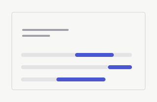
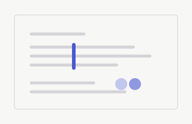
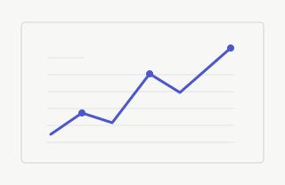
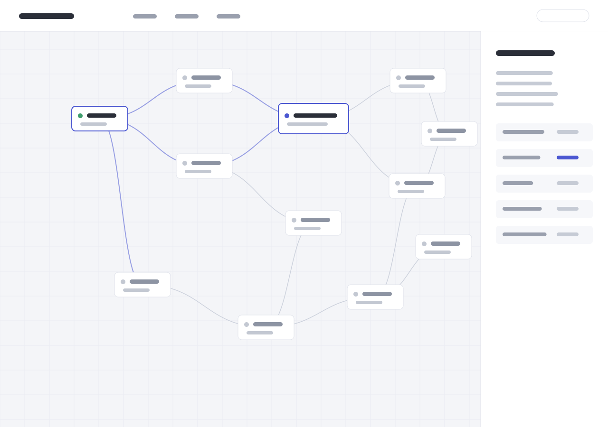
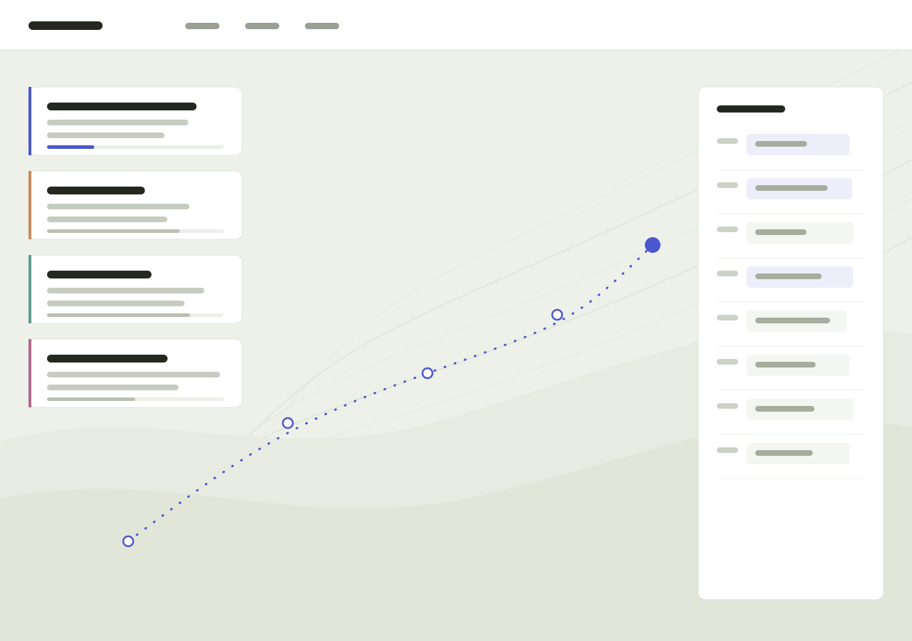
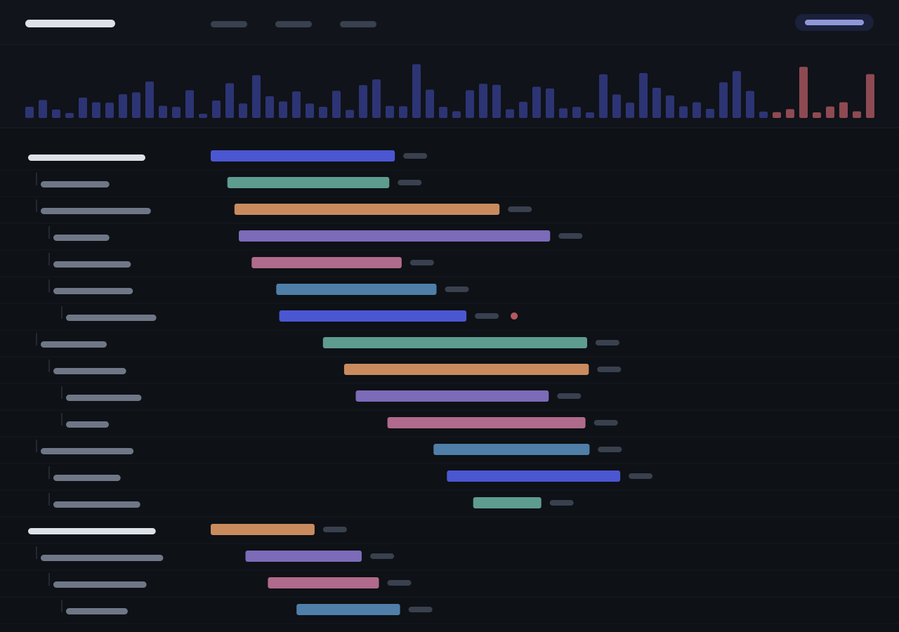
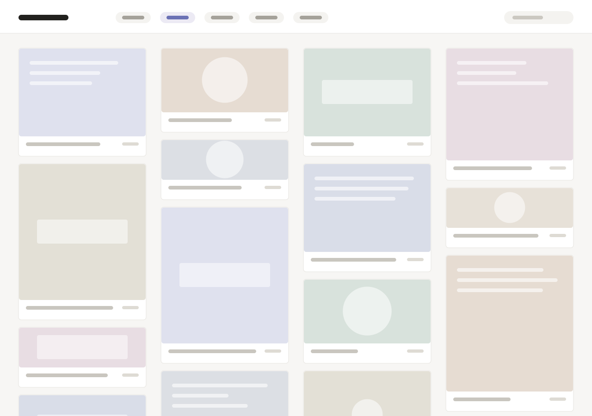

Local
--:--:--
Durham · EST
Signals
Work
Eight builds, 2022–2026.
Pick one from the index to see it.







2026 — Systems
Scheduling infrastructure for systems that depend on precise and reliable timing.
Go · gRPC · PostgreSQL
2025 — Collaboration
A collaborative writing environment designed for fast and conflict-free changes.
TypeScript · CRDT · WebSockets
2025 — Data
A focused interface for exploring high-volume operational and financial data.
Rust · ClickHouse · SQL
2024 — Infrastructure
A visual environment for understanding distributed services and their dependencies.
Python · GraphQL · Redis
2024 — Navigation
A planning tool that turns complex long-term goals into understandable daily decisions.
Kotlin · Maps · SQLite
2023 — Communication
A quiet asynchronous communication space built for thoughtful distributed teams.
Node.js · WebRTC · MongoDB
2023 — Developer tools
A compact observability tool that helps developers trace failures across a system.
Elixir · OpenTelemetry · Kafka
2022 — Archive
A personal digital archive for preserving visual references, notes, and unfinished ideas.
JavaScript · IndexedDB · Canvas
Photography
Small studies in weather, light, and the places between.
Awards
A few milestones from the work along the way.
First place · North Carolina’s 4th District
Special award · Computing & systems
College Board recognition